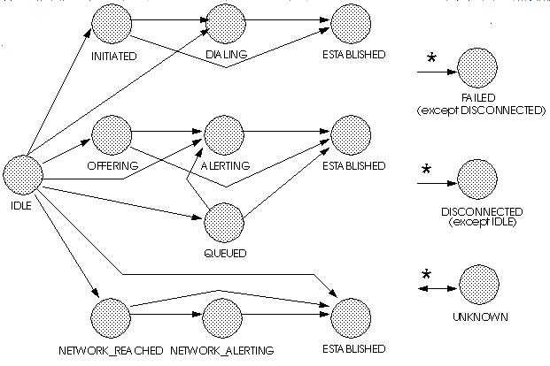

public interface CallControlConnection extends Connection
CallControlConnection interface extends the core
Connection interface and provides additional features and
greater detail about the Connection state. Applications may query a
Connection object using the instanceof operator to see whether
it supports this interface.
Connection interface.
The states defined by this interface are related to the states defined in
the core package in certain, specific ways, as defined below. Applications
may obtain the CallControlConnection state via the
getCallControlState() method defined on this interface. This
method returns one of the integer state constants defined in this interface.
Below is a description of each CallControlConnection state in
real-world terms. These real-world descriptions only serve to provide a
more intuitive understanding of what is going on. Several methods in this
specification state pre-conditions based upon the
CallControlConnection state. Some of these states are identical
to those defined in the core package.
CallControlConnection.IDLE |
This state has the same definition as in the core package. It is the
initial CallControlConnection state for all new Connections.
Connections typically do not stay in this state for long, but quickly
transition to another state.
|
CallControlConnection.OFFERED |
This state indicates than an incoming call is being offered to the Address associated with the Connection. Typically, applications must either accept or reject this offered call before the called party is alerted to the incoming telephone call. |
CallControlConnection.QUEUED |
This state indicates that a Connection is queued at the particular Address associated with the Connection. For example, some telephony platforms permit the "queueing" of incoming telephone call to an Address when the Address is busy. |
CallControlConnection.NETWORK_REACHED |
This state indicates that an outgoing telephone call has reached the network. Applications may not receive further events about this leg of the telephone call, depending upon the ability of the telephone network to provide additional progress information. Applications must decide whether to treat this as a connected telephone call. |
CallControlConnection.NETWORK_ALERTING |
This state indicates that an outgoing telephone call is alerting at the
destination end, which was previously only known to have reached the
network. Typically, Connections transition into this state from the
CallControlConnection.NETWORK_REACHED state. This state results
from additional progress information being sent from the telephone network.
|
CallControlConnection.ALERTING |
This state has the same definition as in the core package. It implies that the Address is being notified of an incoming call. |
CallControlConnection.INITIATED |
This state indicates the originating end of a telephone call has begun the process of placing a telephone call, but the dialing of the destination telephone address has not yet begun. Typically, a telephone associated with the Address has gone "off-hook". |
CallControlConnection.DIALING |
This state indicates the originating end of a telephone call has begun the process of dialing a destination telephone address, but has not yet completed dialing. |
CallControlConnection.ESTABLISHED |
This state is similar to that of Connection.CONNECTED. It
indicates that the endpoint has reached its final, active state in the
telephone call.
|
CallControlConnection.DISCONNECTED |
This state has the same definition as in the core package. It implies the Connection object is no longer part of the telephone call. |
CallControlConnection.FAILED |
This state has the same definition as in the core package. It indicates that a particular leg of a telephone call has failed for some reason, perhaps because the party was busy. |
CallControlConnection.UNKNOWN |
This state has the same definition as in the core package. It indicates the implementation is unable to determine the current call control package state of the Connection object. Typically, methods are invalid on this object when it is in this state. |
Connection state transition diagram, the
CallControlConnection state must transition according to rules
illustrated in the finite state diagram below. An implementation must
guarantee that CallControlConnection state must abide by this
transition diagram.
Note there is a general left-to-right progression of the state transitions. The asterisk next to a state transition, as in the core package, implies a transition to/from another state, except where noted.

CallControlConnection states and the Connection
states. If an implementation supports the call control package, it must
ensure this relationship is properly maintained.
Since the states defined in the CallControlConnection interface
provide more detail to the states defined in the Connection
interface, each state in the Connection interface corresponds
to a state defined in the CallControlConnection interface.
Conversely, each CallControlConnection state corresponds to
exactly one Connection state. This arrangement permits
applications to view either the core state or the call control state and
still see a consistent view.
The following table outlines the relationship between the core package Connection states and the call control package Connection states.
| If the call control package state is... | then the core package state must be... |
CallControlConnection.IDLE |
Connection.IDLE |
CallControlConnection.QUEUED |
Connection.INPROGRESS |
CallControlConnection.OFFERED |
Connection.INPROGRESS |
CallControlConnection.ALERTING |
Connection.ALERTING |
CallControlConnection.INITIATED |
Connection.CONNECTED |
CallControlConnection.DIALING |
Connection.CONNECTED |
CallControlConnection.NETWORK_REACHED |
Connection.CONNECTED |
CallControlConnection.NETWORK_ALERTING |
Connection.CONNECTED |
CallControlConnection.ESTABLISHED |
Connection.CONNECTED |
CallControlConnection.DISCONNECTED |
Connection.DISCONNECTED |
CallControlConnection.FAILED |
Connection.FAILED |
CallControlConnection.UNKNOWN |
Connection.UNKNOWN |
CallControlConnection interface
are reported via the CallObserver.callChangedEvent() method.
The application observer object must also implement the
CallControlCallObserver interface to express interest in the
call control package events.
Observers which are registered on a Call receive events when the
CallControlConnection state changes. Note that when the
CallControlConnection state changes, it sometimes results in
the Connection state changing (according to the table above).
In these instances, both the proper call control and core package events are
delivered to the observer.
The CallControlConnection state events defined in this package
are: CallCtlConnOfferedEv, CallCtlConnQueuedEv,
CallCtlConnAlertingEv, CallCtlConnInitiatedEv,
CallCtlConnDialingEv, CallCtlConnNetworkReachedEv,
CallCtlConnNetworkAlertingEv, CallCtlConnFailedEv,
CallCtlConnEstablishedEv, CallCtlConnUnknownEv,
and CallCtlConnDisconnectedEv.
Connection,
CallObserver,
CallControlCallObserver,
CallCtlCallEv,
CallCtlConnEv,
CallCtlConnAlertingEv,
CallCtlConnDialingEv,
CallCtlConnDisconnectedEv,
CallCtlConnEstablishedEv,
CallCtlConnFailedEv,
CallCtlConnInitiatedEv,
CallCtlConnNetworkAlertingEv,
CallCtlConnNetworkReachedEv,
CallCtlConnOfferedEv,
CallCtlConnQueuedEv,
CallCtlConnUnknownEv| Modifier and Type | Field and Description |
|---|---|
static int |
ALERTING
The
CallControlConnection.ALERTING state has the same
definition as in the core package. |
static int |
DIALING
The
CallControlConnection.DIALING state indicates the
originating end of a telephone call has begun the process of dialing a
destination telephone address, but has not yet completed. |
static int |
DISCONNECTED
The
CallControlConnection.DISCONNECTED state has the same
definition as in the core package. |
static int |
ESTABLISHED
The
CallControlConnection.ESTABLISHED state is similar to
that of Connection.CONNECTED. |
static int |
FAILED
The
CallControlConnection.FAILED state has the same
definition as in the core package. |
static int |
IDLE
The
CallControlConnection.IDLE state has the same definition
as in the core package. |
static int |
INITIATED
The
CallControlConnection.INITIATED state indicates the
originating end of a telephone call has begun the process of placing a
telephone call, but the dialing of the destination telephone address has
not yet begun. |
static int |
NETWORK_ALERTING
The
CallControlConnection.NETWORK_ALERTING state indicates
that an outgoing telephone call is alerting at the destination end, which
was previously only known to have reached the network. |
static int |
NETWORK_REACHED
The
CallControlConnection.NETWORK_REACHED state indicates
that an outgoing telephone call has reached the network. |
static int |
OFFERED
The
CallControlConnection.OFFERED state indicates than an
incoming call is being offered to the Address associated with the
Connection. |
static int |
OFFERING
Deprecated.
Since JTAPI v1.2.
|
static int |
QUEUED
The
CallControlConnection.QUEUED state indicates that a
Connection is queued at the particular Address associated with the
Connection. |
static int |
UNKNOWN
The
CallControlConnection.UNKNOWN state has the same
definition as in the core package. |
CONNECTED, INPROGRESS| Modifier and Type | Method and Description |
|---|---|
void |
accept()
Accepts a telephone call incoming to an Address.
|
void |
addToAddress(java.lang.String additionalAddress)
Appends additional address information onto an existing Connection.
|
int |
getCallControlState()
Returns the current call control state of the Connection.
|
Connection |
park(java.lang.String destinationAddress)
Parks a Connection at a destination telephone address.
|
Connection |
redirect(java.lang.String destinationAddress)
Redirects an incoming telephone call at an Address to another telephone
address.
|
void |
reject()
Rejects a telephone call incoming to an Address.
|
disconnect, getAddress, getCall, getCapabilities, getConnectionCapabilities, getState, getTerminalConnectionsstatic final int IDLE
CallControlConnection.IDLE state has the same definition
as in the core package. It is the initial
CallControlConnection state for all new Connections.
Connections typically do not stay in this state for long, quickly
transitioning to another state.static final int OFFERED
CallControlConnection.OFFERED state indicates than an
incoming call is being offered to the Address associated with the
Connection. Typically, applications must either accept or reject this
offered call before the called party is alerted to the incoming telephone
call.
static final int QUEUED
CallControlConnection.QUEUED state indicates that a
Connection is queued at the particular Address associated with the
Connection. A queued call is not active on a call. For example, some
telephony platforms permit the "queueing"
of incoming telephone call to an Address when the Address is busy.static final int ALERTING
CallControlConnection.ALERTING state has the same
definition as in the core package. It means that the Address is being
notified of an incoming call.static final int INITIATED
CallControlConnection.INITIATED state indicates the
originating end of a telephone call has begun the process of placing a
telephone call, but the dialing of the destination telephone address has
not yet begun. Typically, a telephone associated with the Address has
gone "off-hook".static final int DIALING
CallControlConnection.DIALING state indicates the
originating end of a telephone call has begun the process of dialing a
destination telephone address, but has not yet completed.static final int NETWORK_REACHED
CallControlConnection.NETWORK_REACHED state indicates
that an outgoing telephone call has reached the network. Applications may
not receive further events about this leg of the telephone call, depending
upon the ability of the telephone network to provide additional progress
information. Applications must decide whether to treat this as a
connected telephone call.static final int NETWORK_ALERTING
CallControlConnection.NETWORK_ALERTING state indicates
that an outgoing telephone call is alerting at the destination end, which
was previously only known to have reached the network. Typically,
Connections transition into this state from the
CallControlConnection.NETWORK_REACHED state. This state
results from additional progress information being sent from a
telephone network that was capable of transmitting that information.static final int ESTABLISHED
CallControlConnection.ESTABLISHED state is similar to
that of Connection.CONNECTED. It indicates that the endpoint
has reached its final, active state in the telephone call.static final int DISCONNECTED
CallControlConnection.DISCONNECTED state has the same
definition as in the core package. It indicates that the Connection object
is no longer part of the telephone call.static final int FAILED
CallControlConnection.FAILED state has the same
definition as in the core package. It indicates that a Connection
is no longer able to participate in a call. It is a final state in
the life of a Connection. It indicates that a particular leg of
a telephone call has failed for some reason, perhaps because the party
was busy.static final int UNKNOWN
CallControlConnection.UNKNOWN state has the same
definition as in the core package. It indicates that the state of
the Connection is not known to its Provider. Typically, methods are
invalid on this object when it is in this state.static final int OFFERING
CallControlConnection.OFFERING state has been deprecated
in JTAPI v1.2. It has the same meaning as the new
CallControlConnection.OFFERED state. This constant has been
replaced to be more tense-consistent with the event name.
int getCallControlState()
void accept()
throws InvalidStateException,
MethodNotSupportedException,
PrivilegeViolationException,
ResourceUnavailableException
CallControlConnection.OFFERED state.
If successful, this method moves the Connection into the
CallControlConnection.ALERTING state. This method waits
until the telephone call has been accepted or an error occurs and an
exception is thrown.
Pre-conditions:
InvalidStateException - Either the Provider is not "in service"
or the Connection is not "offered".MethodNotSupportedException - This method is not supported by
the implementation.PrivilegeViolationException - The application does not have
the proper authority to invoke this method.ResourceUnavailableException - An internal resource necessary
for the successful invocation of this method is not available.ConnAlertingEv,
CallCtlConnAlertingEvvoid reject()
throws InvalidStateException,
MethodNotSupportedException,
PrivilegeViolationException,
ResourceUnavailableException
CallControlConnection.OFFERED state.
If successful, this method moves the Connection into the
CallControlConnection.DISCONNECTED state. This method
waits until the telephone call has been rejected or an error occurs and
an exception is thrown.
Pre-conditions:
InvalidStateException - Either the Provider is not "in service"
or the Connection is not "offered".MethodNotSupportedException - This method is not supported by
the implementation.PrivilegeViolationException - The application does not have
the proper authority to invoke this method.ResourceUnavailableException - An internal resource necessary
for the successful invocation of this method is not available.ConnDisconnectedEv,
CallCtlConnDisconnectedEvConnection redirect(java.lang.String destinationAddress) throws InvalidStateException, InvalidPartyException, MethodNotSupportedException, PrivilegeViolationException, ResourceUnavailableException
This Connection must either be in the
CallControlConnection.OFFERED state or the
CallControlConnection.ALERTING state. If successful, this
method moves the Connection to the
CallControlConnection.DISCONNECTED state. Additionally, any
TerminalConnections associated with this Connection will move to the
CallControlTerminalConnection.DROPPED state.
A new Connection is created and returned corresponding to the new
destination leg of the telephone call. Note that this Connection may be
null in the case the Call has been redirected outside of
the Provider's domain and can no longer be tracked. The new Connection (if
not null) must at least be in the CallControlConnection.IDLE
state. The Connection may progress beyond this state before this method
returns, which should be reflected by the proper events. This Connection
behaves similarly to the destination Connection as described in
Call.connect() and undergoes similar possible state change
scenarios.
Pre-conditions:
destinationAddress - The Connection is redirected to this telephone
addressInvalidStateException - Either the Provider is not "in service"
or the Connection is not "offered" or "alerting".InvalidPartyException - The destination address to which this
call is redirected is not valid and/or complete.MethodNotSupportedException - This method is not supported by
the implementation.PrivilegeViolationException - The application does not have
the proper authority to invoke this method.ResourceUnavailableException - An internal resource necessary
for the successful invocation of this method is not available.TsapiPlatformException - Implementation specific exception thrown if
the API call fails.ConnCreatedEv,
ConnDisconnectedEv,
TermConnDroppedEv,
CallCtlConnDisconnectedEv,
CallCtlTermConnDroppedEvvoid addToAddress(java.lang.String additionalAddress)
throws InvalidStateException,
MethodNotSupportedException,
PrivilegeViolationException,
ResourceUnavailableException
This Connection must either be in the
CallControlConnection.DIALING state or the
CallControlConnection.INITIATED state. If successful, this
moves the Connection into one of two states. If the information provided
completes the addressing information, as determined by the telephony
platform, the Connection moves into the
CallControlConnection.ESTABLISHED state and the telephone
call is placed. If additional addressing information is still required,
the Connection moves into the CallControlConnection.DIALING
state if not already there.
Pre-conditions:
additionalAddress - The additional addressing information.InvalidStateException - Either the Provider is not "in service"
or the Connection is not "initiated" or "dialing".MethodNotSupportedException - This method is not supported by
the implementation.PrivilegeViolationException - The application does not have
the proper authority to invoke this method.ResourceUnavailableException - An internal resource necessary
for the successful invocation of this method is not available.CallCtlConnDialingEv,
CallCtlConnEstablishedEvConnection park(java.lang.String destinationAddress) throws InvalidStateException, MethodNotSupportedException, PrivilegeViolationException, InvalidPartyException, ResourceUnavailableException
CallControlConnection.QUEUED state.
The new destination telephone address string is given as an argument to
this method and must be a valid and complete telephone address. The
CallControlTerminal.pickup() method permits applications to
"unpark" the new Connection.
The Connection must be in the
CallControlConnection.ESTABLISHED state. If this method
is successful, this Connection moves to the
CallControlConnection.DISCONNECTED state. All of its
associated TerminalConnections move to the
CallControlTerminalConnection.DROPPED state.
Pre-conditions:
destinationAddress - The telephone address string at which this
connection is to be parked.InvalidStateException - Either the Provider was not "in service"
or the Connection was not "established".MethodNotSupportedException - This method is not supported by
the implementation.InvalidPartyException - The party to which to party the
Connection is invalid.PrivilegeViolationException - The application does not have
the proper authority to invoke this method.ResourceUnavailableException - An internal resource necessary
for the successful invocation of this method is not available.ConnCreatedEv,
ConnInProgressEv,
ConnDisconnectedEv,
TermConnDroppedEv,
CallCtlConnQueuedEv,
CallCtlConnDisconnectedEv,
CallCtlTermConnDroppedEvCopyright © 2009 Avaya All Rights Reserved.